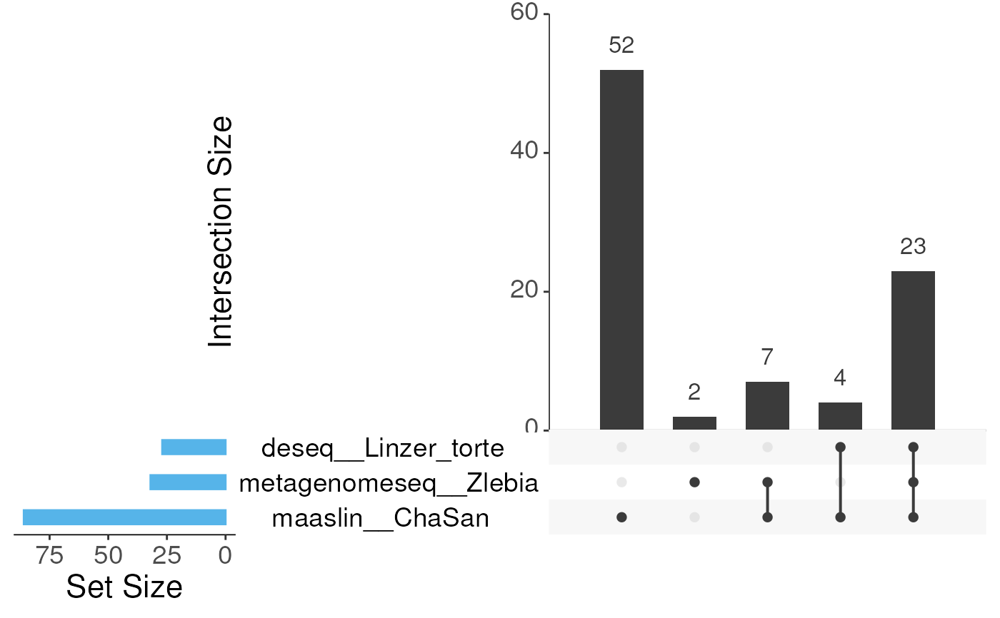
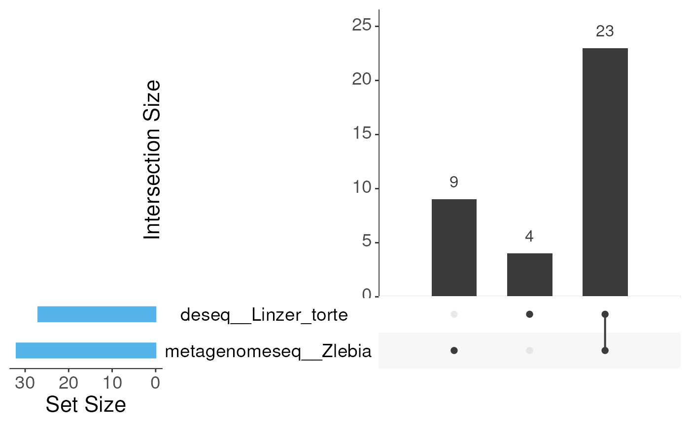

Plot results using UpSet plot
Arguments
- rec
A
recipeobject.- steps
Character vector with step_ids to take in account.
- ordered_by
How the intersections in the matrix should be ordered by. Options include frequency (entered as "freq"), degree, or both in any order.
- font_size
Size of the font.
Examples
data(test_prep_rec)
## Running the function returns a UpSet plot ordered by frequency.
intersection_plt(test_prep_rec)

## Alternatively, you can order the plot by degree
intersection_plt(test_prep_rec, ordered_by = "degree")
## If you want to exclude a method for the plot, you can remove it with the
## step parameter. In the following example we eliminate from the graph the
## results of maaslin
intersection_plt(test_prep_rec, steps = steps_ids(test_prep_rec, "da")[-1])

## intersection_plt function needs a prep-recipe. If you pass a a non-prep
## recipe the output is an error.
data(test_rec)
err <- testthat::expect_error(intersection_plt(test_rec))
err
#> <error/rlang_error>
#> Error in `.local()`:
#> ! This function needs a prep recipe!
#> • Run prep(rec) and then try with intersection_plt()
#> ---
#> Backtrace:
#> ▆
#> 1. └─pkgdown::build_site_github_pages(new_process = FALSE, install = FALSE)
#> 2. └─pkgdown::build_site(...)
#> 3. └─pkgdown:::build_site_local(...)
#> 4. └─pkgdown::build_reference(...)
#> 5. └─purrr::map(...)
#> 6. └─purrr:::map_("list", .x, .f, ..., .progress = .progress)
#> 7. ├─purrr:::with_indexed_errors(...)
#> 8. │ └─base::withCallingHandlers(...)
#> 9. ├─purrr:::call_with_cleanup(...)
#> 10. └─pkgdown (local) .f(.x[[i]], ...)
#> 11. ├─base::withCallingHandlers(...)
#> 12. └─pkgdown:::data_reference_topic(...)
#> 13. └─pkgdown:::run_examples(...)
#> 14. └─pkgdown:::highlight_examples(code, topic, env = env)
#> 15. └─downlit::evaluate_and_highlight(...)
#> 16. └─evaluate::evaluate(code, child_env(env), new_device = TRUE, output_handler = output_handler)
#> 17. └─evaluate:::evaluate_call(...)
#> 18. ├─evaluate (local) timing_fn(...)
#> 19. ├─evaluate (local) handle(...)
#> 20. │ └─base::try(f, silent = TRUE)
#> 21. │ └─base::tryCatch(...)
#> 22. │ └─base (local) tryCatchList(expr, classes, parentenv, handlers)
#> 23. │ └─base (local) tryCatchOne(expr, names, parentenv, handlers[[1L]])
#> 24. │ └─base (local) doTryCatch(return(expr), name, parentenv, handler)
#> 25. ├─base::withCallingHandlers(...)
#> 26. ├─base::withVisible(...)
#> 27. └─evaluate:::eval_with_user_handlers(expr, envir, enclos, user_handlers)
#> 28. └─base::eval(expr, envir, enclos)
#> 29. └─base::eval(expr, envir, enclos)
#> 30. ├─testthat::expect_error(intersection_plt(test_rec))
#> 31. │ └─testthat:::expect_condition_matching(...)
#> 32. │ └─testthat:::quasi_capture(...)
#> 33. │ ├─testthat (local) .capture(...)
#> 34. │ │ └─base::withCallingHandlers(...)
#> 35. │ └─rlang::eval_bare(quo_get_expr(.quo), quo_get_env(.quo))
#> 36. ├─dar::intersection_plt(test_rec)
#> 37. └─dar::intersection_plt(test_rec)
#> 38. └─dar (local) .local(rec, steps, font_size)